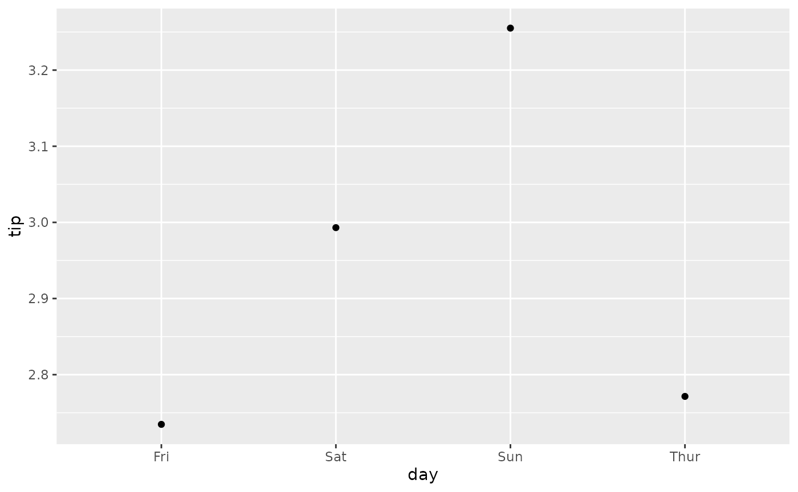
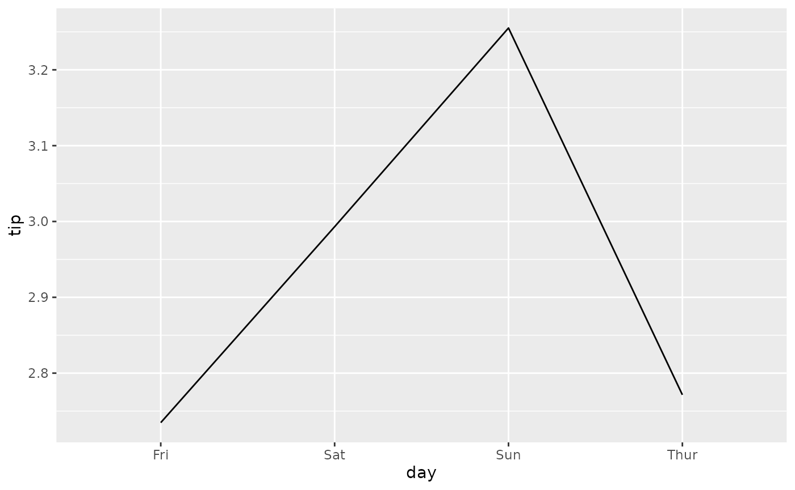
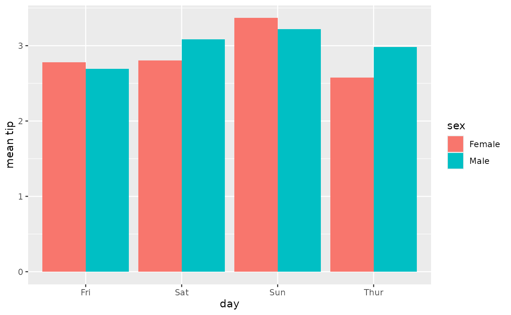
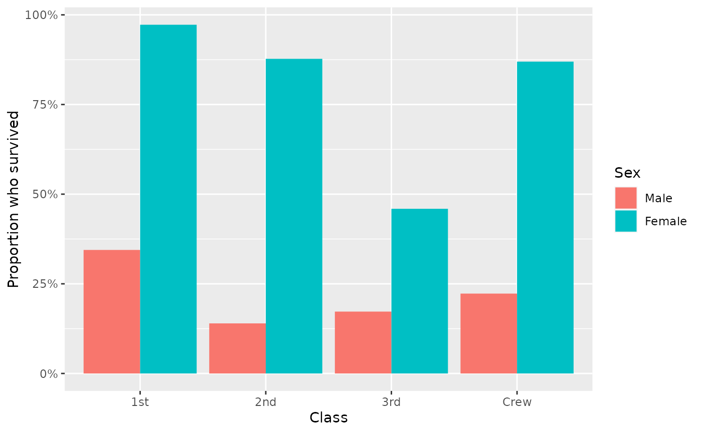

Compute weighted mean with `stat_weighted_mean()`
Source:vignettes/stat_weighted_mean.Rmd
stat_weighted_mean.Rmdstat_weighted_mean() computes mean value of
y (taking into account any weight
aesthetic if provided) for each value of x. More
precisely, it will return a new data frame with one line per unique
value of x with the following new variables:
- y: mean value of the original y (i.e. numerator/denominator)
- numerator
- denominator
Let’s take an example. The following plot shows all tips received according to the day of the week.
data(tips, package = "reshape")
ggplot(tips) +
aes(x = day, y = tip) +
geom_point()
To plot their mean value per day, simply use
stat_weighted_mean().
ggplot(tips) +
aes(x = day, y = tip) +
stat_weighted_mean()
We can specify the geometry we want using geom argument.
Note that for lines, we need to specify the group
aesthetic as well.
ggplot(tips) +
aes(x = day, y = tip, group = 1) +
stat_weighted_mean(geom = "line")An alternative is to specify the statistic in
ggplot2::geom_line().

Of course, it could be use with other geometries. Here a bar plot.
p <- ggplot(tips) +
aes(x = day, y = tip, fill = sex) +
stat_weighted_mean(geom = "bar", position = "dodge") +
ylab("mean tip")
p
It is very easy to add facets. In that case, computation will be done separately for each facet.
p + facet_grid(rows = vars(smoker))
stat_weighted_mean() could be also used for computing
proportions as a proportion is technically a mean of binary values (0 or
1).
ggplot(tips) +
aes(x = day, y = as.integer(smoker == "Yes"), fill = sex) +
stat_weighted_mean(geom = "bar", position = "dodge") +
scale_y_continuous(labels = scales::percent) +
ylab("proportion of smoker")
Finally, you can use the weight aesthetic to indicate weights to take into account for computing means / proportions.
d <- as.data.frame(Titanic)
ggplot(d) +
aes(x = Class, y = as.integer(Survived == "Yes"), weight = Freq, fill = Sex) +
geom_bar(stat = "weighted_mean", position = "dodge") +
scale_y_continuous(labels = scales::percent) +
labs(y = "Proportion who survived")